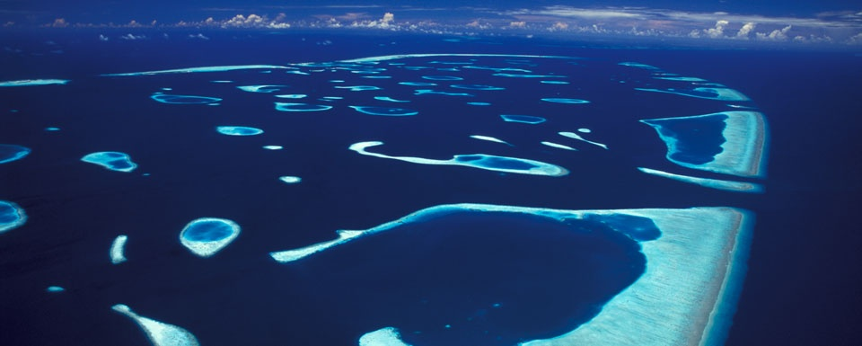
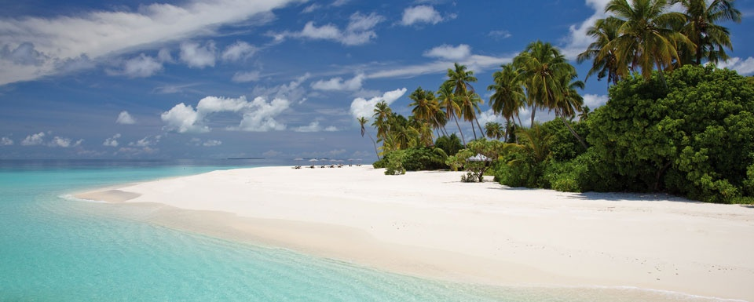

|  |
Les activités
Amoureux des fonds marins, nous vous invitons à découvrir le pays du snorkeling. Pas besoin de faire de la plongée sous-marine avec bouteilles pour en prendre plein les yeux.
Chaussez vos palmes, un masque et un tuba et laissez vous glisser dans le lagon à la découverte du monde du silence…
C’est aux Maldives que l’on peut aussi facilement faire de la plongée libre directement de la plage.
|
|  |
La plage
Si vous aimez la mer, nous vous souhaitons la bienvenue au paradis… L’eau est chaude, autour des 28 °C toute l’année. Elle est translucide, et invite à la baignade. Les lagons sont colorés, du bleu turquoise intense aux nuances de vert céladon. Le sable est incroyablement blanc et si fin que vos pieds auront du mal à reprendre le rythme des chaussures fermées après quelques jours.
|